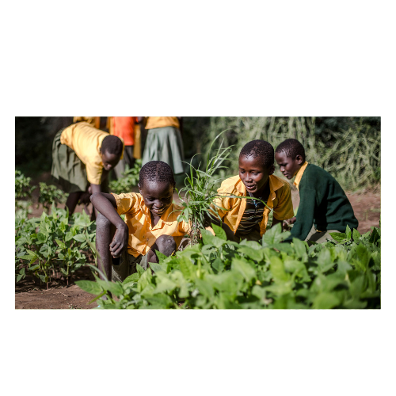
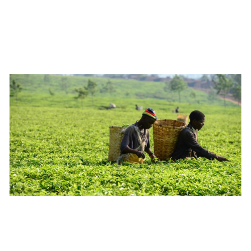
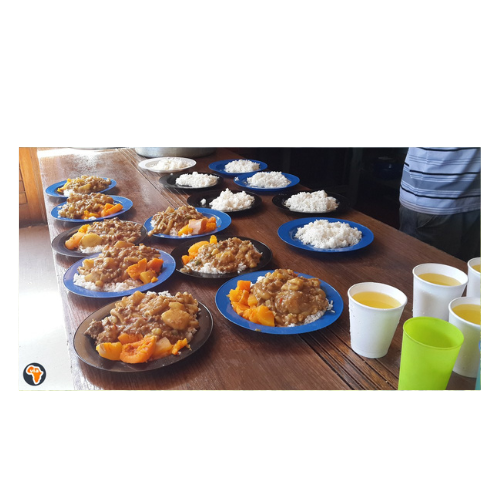

.jpg)
At Conscious Living, we are driven by a profound commitment to transforming the lives of farmers and service providers. Our mission is to ensure that these dedicated individuals receive a fair and livable wage, shielding them from the exploitation that is often perpetuated by large corporations. Your generous contributions are vital to our efforts in maintaining and promoting fair-trade practices. By supporting our cause, you directly contribute to a more equitable economic system where every worker is valued and compensated appropriately for their hard work. Your donations help us foster a thriving local economy, encouraging sustainable and ethical practices that benefit not only the individuals we support but also the broader community.
Moreover, Conscious Living extends its impact to some of the most vulnerable members of our society. We are particularly focused on providing meaningful employment opportunities to child workers from child-headed households, ensuring they receive not only a reliable income but also essential support services such as nutritious food, quality education, and a safe and nurturing environment. This holistic approach is designed to break the cycle of poverty and give these children a fair chance to build a better future. Similarly, we prioritize hiring elderly individuals from elderly-headed households, offering them stable employment that ensures financial security and respect. By supporting our mission, you help us create a more inclusive and supportive community, where everyone—regardless of age or circumstance—has the opportunity to lead a dignified and fulfilling life. Your contributions are instrumental in making this vision a reality, and together, we can drive meaningful change and foster a fairer, more compassionate world.
Your generous donations play a pivotal role in transforming lives and fostering sustainable development within the communities we support. A significant portion of your contributions is allocated to our comprehensive feeding scheme, which ensures that all workers receive nutritious meals three times a day, should they choose to work long hours. This initiative is designed to address food security and enhance overall well-being, providing essential sustenance that supports their daily labor and promotes a healthier lifestyle. Additionally, we invest in safe, clean, and dignified housing for those who are homeless or orphaned, ensuring they have a secure place to live. This housing not only offers shelter but also provides a sense of stability and comfort, which is crucial for fostering a productive and supportive environment.
  Beyond immediate needs, your donations are also used to equip workers with the resources and knowledge necessary to enhance their farming practices and diversify their income streams. We offer training and support in sustainable farming techniques, which empowers individuals to optimize their agricultural practices and achieve long-term success. By providing access to advanced tools, techniques, and educational resources, we enable them to improve productivity, reduce environmental impact, and increase their earning potential. This comprehensive approach ensures that our beneficiaries have a dignified way to earn a living, paving the way for financial independence and a better quality of life. Your contributions are instrumental in creating a more equitable and self-sufficient community, where everyone has the opportunity to thrive and build a brighter future.